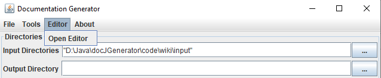
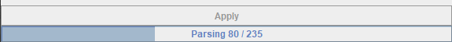
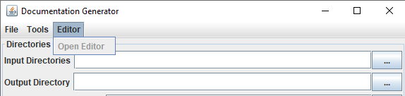

Home
Categories
Dictionary
Download
Project Details
Changes Log
What Links Here
How To
Syntax
FAQ
License
DocGenerator editor
You can edit the wiki using any source editor (or even a text editor), but the tool provides an associated editor to edit the wiki.
The tool will then parse the entire wiki exactly as for the wiki generation, using the same options as the GUI interface. Please note that this initial opening of the editor can take some time, depending on the size of the wiki.
Depending on the size of the wiki, you may see the progress bar status at the bottom of the GUI before the editor is opened:
To be able to open the editor, you need:
The editor window has the following panels:

Opening the editor
To open the editor, you need to define at least the inputs of the wiki, you can call the editor by using the Editor => Open Editor menu:
The tool will then parse the entire wiki exactly as for the wiki generation, using the same options as the GUI interface. Please note that this initial opening of the editor can take some time, depending on the size of the wiki.
Depending on the size of the wiki, you may see the progress bar status at the bottom of the GUI before the editor is opened:

Editor requirements
Main Article: Editor requirements
To be able to open the editor, you need:
- To define at least the inputs of the wiki
- To have the
docGeneratorEditor.jarlibrary in your ClassPath (by default it is included if the jar file is in the same directory as thedocGenerator.jarjar file) - You also need to have the JavaFX framework in your ClassPath[1]
Note that by default it is not automatically the case if your Java version is at least Java 11

Editor window
Main Article: Editor window
The editor window has the following panels:
- The top of the window presents a menubar and a toolbar allowing to manage the content of the wiki and navigate in the wiki content
- The left panel shows the tree of the wiki roots
- The Editor content panel shows the content of the currently selected element in the tree
- The bottom panel is a message area showing potential parsing errors on the selected element in the tree
Notes
- ^ Note that by default it is not automatically the case if your Java version is at least Java 11
See also
- Editor tutorial: This article is a tutorial explaining how to use the editor
- GUI interface: This article is about the GUI interface of the application
×

Categories: Editor | Gui